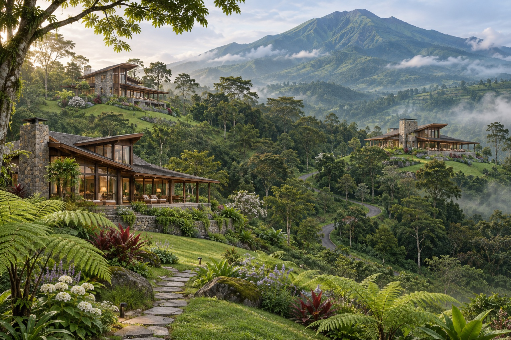

A place already taking shape
The built pilot and partially developed Arvorest Woods establish a real relationship with the land.

The land / Trawas, East Java
A long-term ambition of approximately 40–50 hectares, developed in thoughtful chapters.
The wider vision
Existing development provides the starting point. The next chapters bring hospitality, private residences, gathering spaces, the 800 Club and a proposed arboretum into a connected mountain destination.
The built pilot and partially developed Arvorest Woods establish a real relationship with the land.
The Main Lodge, accommodation, residences and shared facilities shape the next phase of development.
An eventual overall scale envisioned for the destination, with room for woodland, botanical gardens and future neighborhoods.
Let the landscape lead
Arrange buildings and access around the slope, woodland and natural drainage.
Separate homes and activities with generous planting and considered routes.
Water supply, treatment, drainage and landscape planning belong within the same development process.

The shared heart
Gatherings, hospitality and the everyday pleasures of mountain living give the wider development a shared center.
Discover the Main LodgeYour next chapter
Tell us what you have in mind. Our conversation starts here.